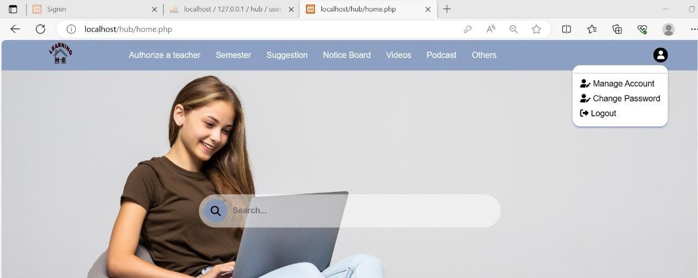

July 2023 · Final-year project
Learning Hub
A free e-learning platform for National University students. Courses are organised by semester, with exam question collections, answers as PDF files and video tutorials, plus a community section where students share thoughts and feedback.
View code on GitHub